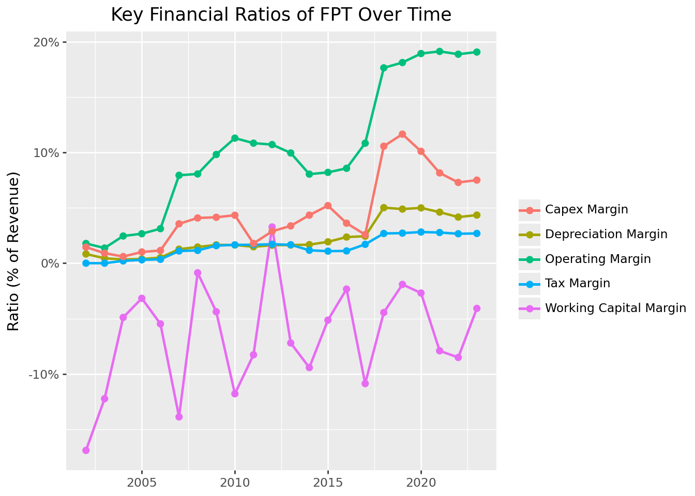
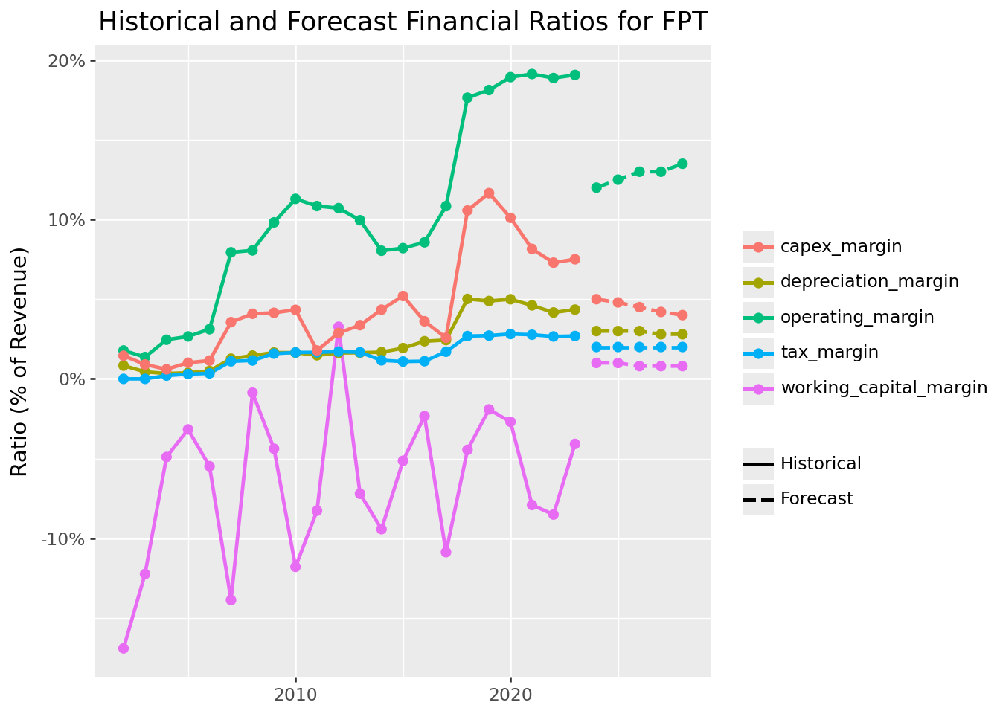
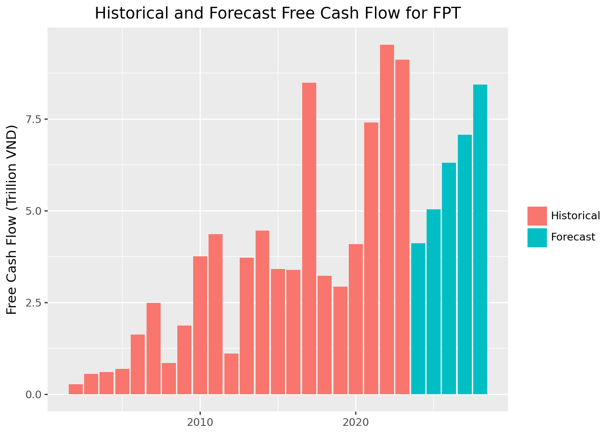
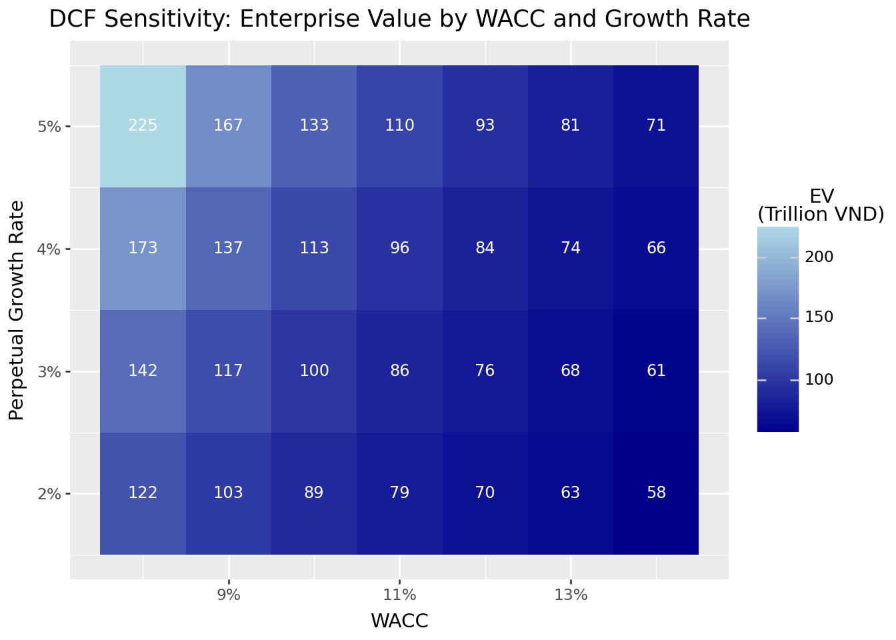

import pandas as pd
import numpy as np
import statsmodels.formula.api as smf
from plotnine import *
from mizani.formatters import percent_format, comma_format
from itertools import product6 Discounted Cash Flow Analysis
6.1 What Is a Company Worth?
The previous chapters examined how markets price securities in equilibrium and how financial statements reveal company fundamentals. But these approaches leave a central question unanswered: What is the intrinsic value of a business, independent of its current market price?
Discounted Cash Flow (DCF) analysis answers this question by valuing a company based on its ability to generate cash for investors. The core insight is simple: a business is worth the present value of all future cash it will produce. This principle that value equals discounted future cash flows underlies virtually all of finance, from bond pricing to real estate valuation.
DCF analysis stands apart from other valuation approaches in three important ways. First, it explicitly accounts for the time value of money (i.e., the principle that a dollar today is worth more than a dollar tomorrow). By discounting future cash flows at an appropriate rate, we incorporate both time preferences and risk. Second, DCF is forward-looking, making it particularly suitable for companies where historical performance may not reflect future potential. Third, DCF is flexible enough to accommodate various business models and capital structures, making it applicable across industries and company sizes.
6.1.1 Valuation Methods Overview
Company valuation methods broadly fall into three categories:
- Market-based approaches compare companies using relative metrics like Price-to-Earnings or EV/EBITDA ratios. These are quick but assume comparable companies are fairly valued.
- Asset-based methods focus on the net value of tangible and intangible assets. These work well for liquidation scenarios but miss going-concern value.
- Income-based techniques value companies based on their ability to generate future cash flows. DCF is the most rigorous income-based method.
We focus on DCF because it forces analysts to make explicit assumptions about growth, profitability, and risk. These assumptions are often hidden in other methods. Even when DCF isn’t the final word on valuation, the discipline of building a DCF model deepens understanding of what drives value.
6.1.2 The Three Pillars of DCF
Every DCF analysis rests on three components:
- Free Cash Flow (FCF) forecasts: The expected future cash available for distribution to investors after operating expenses, taxes, and investments
- Terminal value: The company’s value beyond the explicit forecast period, often representing a majority of total valuation
- Discount rate: Typically the Weighted Average Cost of Capital (WACC), which adjusts future cash flows to present value by incorporating risk and capital structure
We make simplifying assumptions throughout this chapter. In particular, we assume firms conduct only operating activities (i.e., financial statements do not include non-operating items like excess cash or investment securities). Real-world valuations require valuing these separately. Entire textbooks are devoted to valuation nuances; our goal is to establish the conceptual framework and practical implementation.
6.2 Understanding Free Cash Flow
Before diving into calculations, we need to understand what Free Cash Flow represents and why it matters for valuation.
6.2.1 Why Free Cash Flow, Not Net Income?
Accountants report net income, but DCF uses free cash flow. Why the difference?
Net income includes non-cash items (like depreciation) and ignores cash needs (like capital expenditures and working capital investments). A company can report strong profits while burning cash, or generate substantial cash while reporting losses. Free cash flow captures what actually matters for valuation: the cash available to distribute to all capital providers (both debt holders and equity holders) after funding operations and investments.
6.2.2 The Free Cash Flow Formula
We calculate FCF using the following formula:
\[ \text{FCF} = \text{EBIT} \times (1 - \tau) + \text{D\&A} - \Delta\text{WC} - \text{CAPEX} \]
where:
- EBIT (Earnings Before Interest and Taxes): Core operating profit before financing costs and taxes
- \(\tau\): Corporate tax rate applied to operating profits
- D&A (Depreciation & Amortization): Non-cash charges that reduce reported earnings but don’t consume cash
- \(\Delta\)WC (Change in Working Capital): Cash tied up in (or released from) operations (increases in receivables and inventory consume cash, while increases in payables provide cash)
- CAPEX (Capital Expenditures): Investments in long-term assets required to maintain and grow operations
An alternative formulation starts from EBIT directly:
\[ \text{FCF} = \text{EBIT} + \text{D\&A} - \text{Taxes} - \Delta\text{WC} - \text{CAPEX} \]
Both formulations yield the same result when taxes are calculated consistently. The key insight is that FCF represents cash generated from operations after all reinvestment needs (i.e., cash that could theoretically be distributed to investors without impairing the business).
6.3 Loading Historical Financial Data
We use FPT Corporation, one of Vietnam’s largest technology companies, as our case study. FPT provides IT services, telecommunications, and education. It’s a diversified business with meaningful capital requirements and growth potential.
import sqlite3
tidy_finance = sqlite3.connect(database="data/tidy_finance_python.sqlite")
comp_vn = pd.read_sql_query(
sql="SELECT * FROM comp_vn",
con=tidy_finance,
parse_dates={"date"}
)
# Filter to FPT and examine the data structure
fpt_data = comp_vn[comp_vn["symbol"] == "FPT"].copy()
fpt_data["year"] = fpt_data["year"].astype(int)
fpt_data = fpt_data.sort_values("year").reset_index(drop=True)
print(f"Available years: {fpt_data['year'].min()} to {fpt_data['year'].max()}")
print(f"Number of observations: {len(fpt_data)}")Available years: 2002 to 2023
Number of observations: 226.3.1 Computing Historical Free Cash Flow
Let’s calculate the components needed for FCF from the financial statement data:
# Extract and compute FCF components
historical_data = (fpt_data
.assign(
# Revenue for ratio calculations
revenue=lambda x: x["is_net_revenue"],
# EBIT = Earnings before interest and taxes
# Approximate as EBT + Interest Expense
ebit=lambda x: x["is_ebt"] + x["is_interest_expense"],
# Tax payments (use actual tax expense)
taxes=lambda x: x["is_cit_expense"],
# Depreciation and amortization (non-cash add-back)
depreciation=lambda x: x["cfo_depreciation"],
# Change in working capital components
# Positive delta_wc means cash is consumed (tied up in working capital)
delta_working_capital=lambda x: (
x["cfo_receive"] + # Change in receivables
x["cfo_inventory"] - # Change in inventory
x["cfo_payale"] # Change in payables (negative = cash source)
),
# Capital expenditures
capex=lambda x: x["capex"]
)
.loc[:, [
"year", "revenue", "ebit", "taxes", "depreciation",
"delta_working_capital", "capex"
]]
)
# Calculate Free Cash Flow
historical_data["fcf"] = (
historical_data["ebit"]
- historical_data["taxes"]
+ historical_data["depreciation"]
- historical_data["delta_working_capital"]
- historical_data["capex"]
)
historical_data| year | revenue | ebit | taxes | depreciation | delta_working_capital | capex | fcf | |
|---|---|---|---|---|---|---|---|---|
| 0 | 2002 | 1.514961e+12 | 2.698700e+10 | 0.000000e+00 | 1.261500e+10 | -2.561760e+11 | 2.202800e+10 | 2.737500e+11 |
| 1 | 2003 | 4.148298e+12 | 5.676100e+10 | 0.000000e+00 | 1.837700e+10 | -5.078740e+11 | 3.753300e+10 | 5.454790e+11 |
| 2 | 2004 | 8.734781e+12 | 2.145902e+11 | 1.795700e+10 | 2.947900e+10 | -4.280270e+11 | 5.252100e+10 | 6.016182e+11 |
| 3 | 2005 | 1.410079e+13 | 3.753490e+11 | 4.251500e+10 | 5.381700e+10 | -4.471110e+11 | 1.428320e+11 | 6.909300e+11 |
| 4 | 2006 | 2.139975e+13 | 6.672593e+11 | 7.368682e+10 | 1.068192e+11 | -1.173099e+12 | 2.459780e+11 | 1.627513e+12 |
| 5 | 2007 | 1.349889e+13 | 1.071941e+12 | 1.487146e+11 | 1.709335e+11 | -1.873794e+12 | 4.802762e+11 | 2.487677e+12 |
| 6 | 2008 | 1.638184e+13 | 1.320573e+12 | 1.890384e+11 | 2.395799e+11 | -1.419506e+11 | 6.690461e+11 | 8.440192e+11 |
| 7 | 2009 | 1.840403e+13 | 1.807221e+12 | 2.916482e+11 | 3.041813e+11 | -8.065011e+11 | 7.632280e+11 | 1.863027e+12 |
| 8 | 2010 | 2.001730e+13 | 2.261341e+12 | 3.314359e+11 | 3.294060e+11 | -2.360993e+12 | 8.672138e+11 | 3.753090e+12 |
| 9 | 2011 | 2.537025e+13 | 2.751044e+12 | 4.223952e+11 | 3.759567e+11 | -2.099380e+12 | 4.524081e+11 | 4.351578e+12 |
| 10 | 2012 | 2.459430e+13 | 2.635219e+12 | 4.210738e+11 | 3.995598e+11 | 8.043763e+11 | 7.083318e+11 | 1.100997e+12 |
| 11 | 2013 | 2.702789e+13 | 2.690568e+12 | 4.503170e+11 | 4.429860e+11 | -1.947751e+12 | 9.110216e+11 | 3.719967e+12 |
| 12 | 2014 | 3.264466e+13 | 2.625389e+12 | 3.800994e+11 | 5.472736e+11 | -3.078130e+12 | 1.417399e+12 | 4.453295e+12 |
| 13 | 2015 | 3.795970e+13 | 3.113651e+12 | 4.130641e+11 | 7.328801e+11 | -1.951778e+12 | 1.974295e+12 | 3.410951e+12 |
| 14 | 2016 | 3.953147e+13 | 3.388085e+12 | 4.382078e+11 | 9.334397e+11 | -9.242713e+11 | 1.428472e+12 | 3.379116e+12 |
| 15 | 2017 | 4.265861e+13 | 4.623663e+12 | 7.270039e+11 | 1.039417e+12 | -4.638788e+12 | 1.100498e+12 | 8.474367e+12 |
| 16 | 2018 | 2.321354e+13 | 4.095947e+12 | 6.236054e+11 | 1.164692e+12 | -1.033438e+12 | 2.452902e+12 | 3.217569e+12 |
| 17 | 2019 | 2.771696e+13 | 5.023518e+12 | 7.528183e+11 | 1.354613e+12 | -5.308818e+11 | 3.230818e+12 | 2.925377e+12 |
| 18 | 2020 | 2.983040e+13 | 5.648794e+12 | 8.397114e+11 | 1.490607e+12 | -8.040730e+11 | 3.014322e+12 | 4.089441e+12 |
| 19 | 2021 | 3.565726e+13 | 6.821202e+12 | 9.879053e+11 | 1.643916e+12 | -2.821825e+12 | 2.908134e+12 | 7.390903e+12 |
| 20 | 2022 | 4.400953e+13 | 8.308009e+12 | 1.170940e+12 | 1.833064e+12 | -3.746661e+12 | 3.209581e+12 | 9.507213e+12 |
| 21 | 2023 | 5.261790e+13 | 1.003565e+13 | 1.414956e+12 | 2.286514e+12 | -2.147304e+12 | 3.948982e+12 | 9.105534e+12 |
6.3.2 Understanding the Historical Pattern
Before forecasting, we should understand the historical trends in FCF and its components:
# Calculate key ratios relative to revenue
historical_ratios = (historical_data
.assign(
# Revenue growth (year-over-year)
revenue_growth=lambda x: x["revenue"].pct_change(),
# Operating margin: EBIT as % of revenue
operating_margin=lambda x: x["ebit"] / x["revenue"],
# Depreciation as % of revenue
depreciation_margin=lambda x: x["depreciation"] / x["revenue"],
# Tax rate (taxes as % of revenue, for simplicity)
tax_margin=lambda x: x["taxes"] / x["revenue"],
# Working capital intensity
working_capital_margin=lambda x: x["delta_working_capital"] / x["revenue"],
# Capital intensity
capex_margin=lambda x: x["capex"] / x["revenue"],
# FCF margin
fcf_margin=lambda x: x["fcf"] / x["revenue"]
)
)
# Display key metrics
display_cols = [
"year", "revenue_growth", "operating_margin", "depreciation_margin",
"tax_margin", "working_capital_margin", "capex_margin", "fcf_margin"
]
historical_ratios[display_cols].round(3)| year | revenue_growth | operating_margin | depreciation_margin | tax_margin | working_capital_margin | capex_margin | fcf_margin | |
|---|---|---|---|---|---|---|---|---|
| 0 | 2002 | NaN | 0.018 | 0.008 | 0.000 | -0.169 | 0.015 | 0.181 |
| 1 | 2003 | 1.738 | 0.014 | 0.004 | 0.000 | -0.122 | 0.009 | 0.131 |
| 2 | 2004 | 1.106 | 0.025 | 0.003 | 0.002 | -0.049 | 0.006 | 0.069 |
| 3 | 2005 | 0.614 | 0.027 | 0.004 | 0.003 | -0.032 | 0.010 | 0.049 |
| 4 | 2006 | 0.518 | 0.031 | 0.005 | 0.003 | -0.055 | 0.011 | 0.076 |
| 5 | 2007 | -0.369 | 0.079 | 0.013 | 0.011 | -0.139 | 0.036 | 0.184 |
| 6 | 2008 | 0.214 | 0.081 | 0.015 | 0.012 | -0.009 | 0.041 | 0.052 |
| 7 | 2009 | 0.123 | 0.098 | 0.017 | 0.016 | -0.044 | 0.041 | 0.101 |
| 8 | 2010 | 0.088 | 0.113 | 0.016 | 0.017 | -0.118 | 0.043 | 0.187 |
| 9 | 2011 | 0.267 | 0.108 | 0.015 | 0.017 | -0.083 | 0.018 | 0.172 |
| 10 | 2012 | -0.031 | 0.107 | 0.016 | 0.017 | 0.033 | 0.029 | 0.045 |
| 11 | 2013 | 0.099 | 0.100 | 0.016 | 0.017 | -0.072 | 0.034 | 0.138 |
| 12 | 2014 | 0.208 | 0.080 | 0.017 | 0.012 | -0.094 | 0.043 | 0.136 |
| 13 | 2015 | 0.163 | 0.082 | 0.019 | 0.011 | -0.051 | 0.052 | 0.090 |
| 14 | 2016 | 0.041 | 0.086 | 0.024 | 0.011 | -0.023 | 0.036 | 0.085 |
| 15 | 2017 | 0.079 | 0.108 | 0.024 | 0.017 | -0.109 | 0.026 | 0.199 |
| 16 | 2018 | -0.456 | 0.176 | 0.050 | 0.027 | -0.045 | 0.106 | 0.139 |
| 17 | 2019 | 0.194 | 0.181 | 0.049 | 0.027 | -0.019 | 0.117 | 0.106 |
| 18 | 2020 | 0.076 | 0.189 | 0.050 | 0.028 | -0.027 | 0.101 | 0.137 |
| 19 | 2021 | 0.195 | 0.191 | 0.046 | 0.028 | -0.079 | 0.082 | 0.207 |
| 20 | 2022 | 0.234 | 0.189 | 0.042 | 0.027 | -0.085 | 0.073 | 0.216 |
| 21 | 2023 | 0.196 | 0.191 | 0.043 | 0.027 | -0.041 | 0.075 | 0.173 |
6.4 Visualizing Historical Ratios
Figure 6.1 shows the historical evolution of key financial ratios that drive FCF. Understanding these patterns helps inform our forecasts.
# Prepare data for plotting
ratio_columns = [
"operating_margin", "depreciation_margin", "tax_margin",
"working_capital_margin", "capex_margin"
]
ratios_long = (historical_ratios
.melt(
id_vars=["year"],
value_vars=ratio_columns,
var_name="ratio",
value_name="value"
)
.assign(
ratio=lambda x: x["ratio"].str.replace("_", " ").str.title()
)
)
ratios_figure = (
ggplot(ratios_long, aes(x="year", y="value", color="ratio"))
+ geom_line(size=1)
+ geom_point(size=2)
+ scale_y_continuous(labels=percent_format())
+ labs(
x="", y="Ratio (% of Revenue)", color="",
title="Key Financial Ratios of FPT Over Time"
)
+ theme(legend_position="right")
)
ratios_figure.show()

Several patterns emerge from the historical data. Operating margins show the profitability of core operations. Depreciation margins indicate asset intensity. CAPEX margins reveal investment requirements. Working capital margins can be volatile, reflecting changes in credit terms and inventory management.
6.5 Forecasting Free Cash Flow
With historical patterns established, we now project FCF into the future. This requires forecasting both revenue growth and the ratios that convert revenue into cash flow.
6.5.1 The Ratio-Based Forecasting Approach
We use a ratio-based approach that links all FCF components to revenue. This makes forecasting tractable: rather than projecting absolute dollar amounts for each component, we forecast (1) revenue growth and (2) how each component scales with revenue.
This approach embeds a key assumption: that the relationship between revenue and FCF components remains stable. In reality, operating leverage, investment needs, and working capital requirements may change as companies mature. Sophisticated valuations model these dynamics explicitly.
6.5.2 Setting Forecast Assumptions
For our five-year forecast, we make the following assumptions about FPT’s financial ratios. These should reflect industry analysis, company guidance, and competitive dynamics. Here we use estimates for illustration:
# Define the forecast horizon
last_historical_year = historical_data["year"].max()
forecast_years = list(range(last_historical_year + 1, last_historical_year + 6))
n_forecast_years = len(forecast_years)
print(f"Forecast period: {forecast_years[0]} to {forecast_years[-1]}")
# Define forecast ratios
# In practice, these would come from detailed analysis
forecast_assumptions = pd.DataFrame({
"year": forecast_years,
# Operating margin: slight improvement as scale increases
"operating_margin": [0.12, 0.125, 0.13, 0.13, 0.135],
# Depreciation: stable as % of revenue
"depreciation_margin": [0.03, 0.03, 0.03, 0.028, 0.028],
# Tax rate: stable
"tax_margin": [0.02, 0.02, 0.02, 0.02, 0.02],
# Working capital: modest cash consumption
"working_capital_margin": [0.01, 0.01, 0.008, 0.008, 0.008],
# CAPEX: declining as % of revenue as growth moderates
"capex_margin": [0.05, 0.048, 0.045, 0.042, 0.04]
})
forecast_assumptionsForecast period: 2024 to 2028| year | operating_margin | depreciation_margin | tax_margin | working_capital_margin | capex_margin | |
|---|---|---|---|---|---|---|
| 0 | 2024 | 0.120 | 0.030 | 0.02 | 0.010 | 0.050 |
| 1 | 2025 | 0.125 | 0.030 | 0.02 | 0.010 | 0.048 |
| 2 | 2026 | 0.130 | 0.030 | 0.02 | 0.008 | 0.045 |
| 3 | 2027 | 0.130 | 0.028 | 0.02 | 0.008 | 0.042 |
| 4 | 2028 | 0.135 | 0.028 | 0.02 | 0.008 | 0.040 |
6.5.3 Forecasting Revenue Growth
Revenue growth is often the most important and most uncertain assumption in DCF analysis. We demonstrate two approaches: using historical averages and linking growth to macroeconomic forecasts.
Approach 1: Historical Average
A simple approach uses the historical average growth rate:
historical_growth = historical_ratios["revenue_growth"].dropna()
avg_historical_growth = historical_growth.mean()
print(f"Average historical revenue growth: {avg_historical_growth:.1%}")Average historical revenue growth: 25.2%Approach 2: GDP-Linked Growth
A more sophisticated approach links company growth to GDP forecasts from institutions like the IMF. This captures the intuition that company revenues often move with broader economic activity.
# Vietnam GDP growth forecasts (illustrative, based on IMF WEO style projections)
# In practice, download from IMF WEO database
gdp_forecasts = pd.DataFrame({
"year": forecast_years,
"gdp_growth": [0.065, 0.063, 0.060, 0.058, 0.055] # Gradually declining to long-term
})
# Assume FPT grows at a premium to GDP (tech sector outperformance)
# This premium should reflect company-specific factors
growth_premium = 0.05 # 5 percentage points above GDP
forecast_assumptions = forecast_assumptions.merge(gdp_forecasts, on="year")
forecast_assumptions["revenue_growth"] = (
forecast_assumptions["gdp_growth"] + growth_premium
)
forecast_assumptions[["year", "gdp_growth", "revenue_growth"]]| year | gdp_growth | revenue_growth | |
|---|---|---|---|
| 0 | 2024 | 0.065 | 0.115 |
| 1 | 2025 | 0.063 | 0.113 |
| 2 | 2026 | 0.060 | 0.110 |
| 3 | 2027 | 0.058 | 0.108 |
| 4 | 2028 | 0.055 | 0.105 |
6.5.4 Building the Forecast
Now we combine our assumptions to project revenue and FCF:
# Get the last historical revenue as our starting point
last_revenue = historical_data.loc[
historical_data["year"] == last_historical_year, "revenue"
].values[0]
print(f"Last historical revenue ({last_historical_year}): {last_revenue/1e12:.2f} trillion VND")
# Project revenue forward
forecast_data = forecast_assumptions.copy()
forecast_data["revenue"] = None
# Calculate revenue for each forecast year
for i, row in forecast_data.iterrows():
if i == 0:
# First forecast year: grow from last historical
forecast_data.loc[i, "revenue"] = last_revenue * (1 + row["revenue_growth"])
else:
# Subsequent years: grow from previous forecast
prev_revenue = forecast_data.loc[i-1, "revenue"]
forecast_data.loc[i, "revenue"] = prev_revenue * (1 + row["revenue_growth"])
# Convert revenue to numeric
forecast_data["revenue"] = forecast_data["revenue"].astype(float)
# Calculate FCF components from ratios
forecast_data["ebit"] = forecast_data["operating_margin"] * forecast_data["revenue"]
forecast_data["depreciation"] = forecast_data["depreciation_margin"] * forecast_data["revenue"]
forecast_data["taxes"] = forecast_data["tax_margin"] * forecast_data["revenue"]
forecast_data["delta_working_capital"] = forecast_data["working_capital_margin"] * forecast_data["revenue"]
forecast_data["capex"] = forecast_data["capex_margin"] * forecast_data["revenue"]
# Calculate FCF
forecast_data["fcf"] = (
forecast_data["ebit"]
- forecast_data["taxes"]
+ forecast_data["depreciation"]
- forecast_data["delta_working_capital"]
- forecast_data["capex"]
)
forecast_data[["year", "revenue", "ebit", "fcf"]].round(0)Last historical revenue (2023): 52.62 trillion VND| year | revenue | ebit | fcf | |
|---|---|---|---|---|
| 0 | 2024 | 5.866896e+13 | 7.040275e+12 | 4.106827e+12 |
| 1 | 2025 | 6.529855e+13 | 8.162319e+12 | 5.027988e+12 |
| 2 | 2026 | 7.248139e+13 | 9.422581e+12 | 6.305881e+12 |
| 3 | 2027 | 8.030938e+13 | 1.044022e+13 | 7.067226e+12 |
| 4 | 2028 | 8.874187e+13 | 1.198015e+13 | 8.430477e+12 |
6.6 Visualizing the Forecast
Figure 6.2 compares our forecast ratios with historical values, showing the transition from realized to projected performance.
# Prepare historical data for plotting
historical_plot = (historical_ratios
.loc[:, ["year", "operating_margin", "depreciation_margin",
"tax_margin", "working_capital_margin", "capex_margin"]]
.assign(type="Historical")
)
# Prepare forecast data for plotting
forecast_plot = (forecast_data
.loc[:, ["year", "operating_margin", "depreciation_margin",
"tax_margin", "working_capital_margin", "capex_margin"]]
.assign(type="Forecast")
)
# Combine
combined_ratios = pd.concat([historical_plot, forecast_plot], ignore_index=True)
# Reshape for plotting
combined_long = combined_ratios.melt(
id_vars=["year", "type"],
var_name="ratio",
value_name="value"
)
combined_long["type"] = pd.Categorical(
combined_long["type"],
categories=["Historical", "Forecast"]
)
forecast_ratios_figure = (
ggplot(combined_long, aes(x="year", y="value", color="ratio", linetype="type"))
+ geom_line(size=1)
+ geom_point(size=2)
+ scale_y_continuous(labels=percent_format())
+ labs(
x="", y="Ratio (% of Revenue)", color="", linetype="",
title="Historical and Forecast Financial Ratios for FPT"
)
+ theme(legend_position="right")
)
forecast_ratios_figure.show()

Figure 6.3 shows the revenue growth trajectory, comparing historical performance with our GDP-linked forecasts.
# Prepare growth data
historical_growth_df = (historical_ratios
.loc[:, ["year", "revenue_growth"]]
.dropna()
.assign(type="Historical")
)
forecast_growth_df = (forecast_data
.loc[:, ["year", "revenue_growth", "gdp_growth"]]
.assign(type="Forecast")
)
# Combine for revenue growth
growth_combined = pd.concat([
historical_growth_df,
forecast_growth_df[["year", "revenue_growth", "type"]]
], ignore_index=True)
growth_combined["type"] = pd.Categorical(
growth_combined["type"],
categories=["Historical", "Forecast"]
)
growth_figure = (
ggplot(growth_combined, aes(x="year", y="revenue_growth", linetype="type"))
+ geom_line(size=1, color="steelblue")
+ geom_point(size=2, color="steelblue")
+ scale_y_continuous(labels=percent_format())
+ labs(
x="", y="Revenue Growth Rate", linetype="",
title="Historical and Forecast Revenue Growth for FPT"
)
)
growth_figure.show()
Figure 6.4 presents the resulting FCF projections alongside historical values.
# Combine historical and forecast FCF
fcf_historical = (historical_data
.loc[:, ["year", "fcf"]]
.assign(type="Historical")
)
fcf_forecast = (forecast_data
.loc[:, ["year", "fcf"]]
.assign(type="Forecast")
)
fcf_combined = pd.concat([fcf_historical, fcf_forecast], ignore_index=True)
fcf_combined["type"] = pd.Categorical(
fcf_combined["type"],
categories=["Historical", "Forecast"]
)
fcf_figure = (
ggplot(fcf_combined, aes(x="year", y="fcf/1e12", fill="type"))
+ geom_col()
+ labs(
x="", y="Free Cash Flow (Trillion VND)", fill="",
title="Historical and Forecast Free Cash Flow for FPT"
)
)
fcf_figure.show()

6.7 Terminal Value: Capturing Long-Term Value
A critical component of DCF analysis is the terminal value (or continuation value), which represents the company’s value beyond the explicit forecast period. In most valuations, terminal value constitutes 50-80% of total enterprise value, making its estimation particularly important.
6.7.1 The Perpetuity Growth Model
The most common approach is the Perpetuity Growth Model (also called the Gordon Growth Model), which assumes FCF grows at a constant rate forever:
\[ TV_T = \frac{FCF_{T+1}}{r - g} = \frac{FCF_T \times (1 + g)}{r - g} \]
where:
- \(TV_T\): Terminal value at the end of year \(T\)
- \(FCF_T\): Free cash flow in the final forecast year
- \(g\): Perpetual growth rate
- \(r\): Discount rate (WACC)
6.7.2 Choosing the Perpetual Growth Rate
The perpetual growth rate \(g\) should reflect long-term sustainable growth. Key considerations:
No company can grow faster than the economy forever. If it did, the company would eventually become larger than GDP, which is an impossibility. Long-term GDP growth (nominal, including inflation) provides an upper bound.
Mature companies typically grow at or below GDP growth. The perpetual growth rate should reflect the company in its “steady state,” not its current high-growth phase.
For Vietnam, long-term nominal GDP growth might be 6-8% given current development stage, but this will moderate over time. A perpetual growth rate of 3-5% is often reasonable.
def compute_terminal_value(last_fcf, growth_rate, discount_rate):
"""
Compute terminal value using the perpetuity growth model.
Parameters:
-----------
last_fcf : float
Free cash flow in the final forecast year
growth_rate : float
Perpetual growth rate (g)
discount_rate : float
Discount rate / WACC (r)
Returns:
--------
float : Terminal value
"""
if discount_rate <= growth_rate:
raise ValueError("Discount rate must exceed growth rate for finite terminal value")
return last_fcf * (1 + growth_rate) / (discount_rate - growth_rate)
# Example calculation
last_fcf = forecast_data["fcf"].iloc[-1]
perpetual_growth = 0.04 # 4% perpetual growth
discount_rate = 0.10 # 10% WACC (placeholder)
terminal_value = compute_terminal_value(last_fcf, perpetual_growth, discount_rate)
print(f"Last forecast FCF: {last_fcf/1e12:.2f} trillion VND")
print(f"Terminal value (at {perpetual_growth:.0%} growth, {discount_rate:.0%} WACC): {terminal_value/1e12:.1f} trillion VND")Last forecast FCF: 8.43 trillion VND
Terminal value (at 4% growth, 10% WACC): 146.1 trillion VND6.7.3 Alternative: Exit Multiple Approach
Practitioners often cross-check terminal value using the exit multiple approach, which assumes the company is sold at the end of the forecast period at a multiple of EBITDA, EBIT, or revenue comparable to similar companies today.
For example, if comparable companies trade at 10x EBITDA, the terminal value would be:
\[ TV_T = \text{EBITDA}_T \times \text{Exit Multiple} \]
This approach is simpler but embeds the assumption that current market multiples will persist (a strong assumption that may not hold).
6.8 The Discount Rate: Weighted Average Cost of Capital
The discount rate converts future cash flows to present value. For FCF (which goes to all capital providers), we use the Weighted Average Cost of Capital (WACC):
\[ WACC = \frac{E}{E+D} \times r_E + \frac{D}{E+D} \times r_D \times (1 - \tau) \]
where:
- \(E\): Market value of equity
- \(D\): Market value of debt
- \(r_E\): Cost of equity (typically estimated using CAPM)
- \(r_D\): Cost of debt (pre-tax)
- \(\tau\): Corporate tax rate
The \((1-\tau)\) term on debt reflects the tax shield. Interest payments are tax-deductible, reducing the effective cost of debt.
6.8.1 Estimating WACC Components
Cost of Equity is typically estimated using the Capital Asset Pricing Model (see our CAPM chapter):
\[ r_E = r_f + \beta \times (r_m - r_f) \]
where \(r_f\) is the risk-free rate, \(\beta\) measures systematic risk, and \((r_m - r_f)\) is the market risk premium.
Cost of Debt can be estimated from:
- Interest expense divided by total debt (effective rate)
- Yields on the company’s traded bonds
- Yields on bonds with similar credit ratings
Capital Structure Weights should use market values when available. For equity, market capitalization is straightforward. For debt, book value is often used when market values aren’t observable.
6.8.2 Using Industry WACC Data
Professor Aswath Damodaran at NYU Stern maintains comprehensive industry WACC data. Let’s download and use this resource:
import requests
import os
# Download Damodaran's WACC data
url = "https://pages.stern.nyu.edu/~adamodar/pc/datasets/wacc.xls"
try:
response = requests.get(url, timeout=10)
response.raise_for_status()
with open("wacc.xls", "wb") as f:
f.write(response.content)
# Read the data (skip header rows)
wacc_data = pd.read_excel("wacc.xls", sheet_name=1, skiprows=18)
# Clean up
os.remove("wacc.xls")
# Find WACC for Computer Services (closest to FPT's business)
industry_wacc = wacc_data.loc[
wacc_data["Industry Name"] == "Computer Services",
"Cost of Capital"
].values[0]
print(f"Industry WACC (Computer Services): {industry_wacc:.2%}")
except Exception as e:
print(f"Could not download WACC data: {e}")
# Use a reasonable estimate
industry_wacc = 0.10
print(f"Using estimated WACC: {industry_wacc:.2%}")
wacc = industry_waccCould not download WACC data: `Import xlrd` failed. Install xlrd >= 2.0.1 for xls Excel support Use pip or conda to install the xlrd package.
Using estimated WACC: 10.00%Note: Industry WACC provides a useful benchmark, but company-specific factors (leverage, business risk, country risk) may warrant adjustments. For Vietnamese companies, adding a country risk premium may be appropriate.
6.9 Computing Enterprise Value
With all components in place, we can now compute enterprise value. The DCF formula is:
\[ \text{Enterprise Value} = \sum_{t=1}^{T} \frac{FCF_t}{(1 + WACC)^t} + \frac{TV_T}{(1 + WACC)^T} \]
The first term is the present value of forecast-period cash flows; the second is the present value of terminal value.
def compute_dcf_value(fcf_series, wacc, perpetual_growth):
"""
Compute enterprise value using DCF analysis.
Parameters:
-----------
fcf_series : array-like
Free cash flows for forecast period
wacc : float
Weighted average cost of capital
perpetual_growth : float
Perpetual growth rate for terminal value
Returns:
--------
dict : Components of DCF valuation
"""
fcf = np.array(fcf_series)
n_years = len(fcf)
# Discount factors
discount_factors = (1 + wacc) ** np.arange(1, n_years + 1)
# Present value of forecast period cash flows
pv_fcf = fcf / discount_factors
pv_fcf_total = pv_fcf.sum()
# Terminal value and its present value
terminal_value = compute_terminal_value(fcf[-1], perpetual_growth, wacc)
pv_terminal = terminal_value / discount_factors[-1]
# Total enterprise value
enterprise_value = pv_fcf_total + pv_terminal
return {
"pv_fcf": pv_fcf_total,
"terminal_value": terminal_value,
"pv_terminal": pv_terminal,
"enterprise_value": enterprise_value,
"terminal_pct": pv_terminal / enterprise_value
}
# Compute DCF value
perpetual_growth = 0.04 # 4% perpetual growth
dcf_result = compute_dcf_value(
fcf_series=forecast_data["fcf"].values,
wacc=wacc,
perpetual_growth=perpetual_growth
)
print("DCF Valuation Results")
print("=" * 50)
print(f"PV of Forecast Period FCF: {dcf_result['pv_fcf']/1e12:.1f} trillion VND")
print(f"Terminal Value: {dcf_result['terminal_value']/1e12:.1f} trillion VND")
print(f"PV of Terminal Value: {dcf_result['pv_terminal']/1e12:.1f} trillion VND")
print(f"Enterprise Value: {dcf_result['enterprise_value']/1e12:.1f} trillion VND")
print(f"Terminal Value as % of EV: {dcf_result['terminal_pct']:.1%}")DCF Valuation Results
==================================================
PV of Forecast Period FCF: 22.7 trillion VND
Terminal Value: 146.1 trillion VND
PV of Terminal Value: 90.7 trillion VND
Enterprise Value: 113.4 trillion VND
Terminal Value as % of EV: 80.0%Note that terminal value often represents 60-80% of enterprise value. This highlights the importance of terminal value assumptions and the inherent uncertainty in DCF analysis.
6.10 Sensitivity Analysis
Given the uncertainty in DCF inputs, sensitivity analysis is essential. We examine how enterprise value changes with different assumptions about WACC and perpetual growth.
# Define ranges for sensitivity analysis
wacc_range = np.arange(0.08, 0.14, 0.01) # 8% to 13%
growth_range = np.arange(0.02, 0.06, 0.01) # 2% to 5%
# Create all combinations
sensitivity_results = []
for w in wacc_range:
for g in growth_range:
if w > g: # Must have WACC > growth for valid terminal value
result = compute_dcf_value(
fcf_series=forecast_data["fcf"].values,
wacc=w,
perpetual_growth=g
)
sensitivity_results.append({
"wacc": w,
"growth_rate": g,
"enterprise_value": result["enterprise_value"] / 1e12 # In trillions
})
sensitivity_df = pd.DataFrame(sensitivity_results)
# Create heatmap
sensitivity_figure = (
ggplot(sensitivity_df, aes(x="wacc", y="growth_rate", fill="enterprise_value"))
+ geom_tile()
+ geom_text(
aes(label="enterprise_value"),
format_string="{:.0f}",
color="white",
size=9
)
+ scale_x_continuous(labels=percent_format())
+ scale_y_continuous(labels=percent_format())
+ scale_fill_gradient(low="darkblue", high="lightblue")
+ labs(
x="WACC", y="Perpetual Growth Rate",
fill="EV\n(Trillion VND)",
title="DCF Sensitivity: Enterprise Value by WACC and Growth Rate"
)
)
sensitivity_figure.show()

The sensitivity analysis reveals several important insights:
Valuation is highly sensitive to inputs: Small changes in WACC or growth rate produce large changes in enterprise value. A 1 percentage point change in WACC can shift value by 20% or more.
The relationship is non-linear: The impact of growth rate changes is amplified at lower WACCs because the terminal value formula has \((r-g)\) in the denominator.
Reasonable people can disagree: Given input uncertainty, DCF should be thought of as producing a range of values, not a single precise number.
6.11 From Enterprise Value to Equity Value
Our DCF analysis yields enterprise value (i.e., the total value of the company’s operations to all capital providers). To determine equity value (what shareholders own), we must adjust for the claims of debt holders and any non-operating assets:
\[ \text{Equity Value} = \text{Enterprise Value} + \text{Non-Operating Assets} - \text{Debt} \]
Non-Operating Assets include:
- Excess cash beyond operating needs
- Marketable securities
- Non-core real estate or investments
Debt includes:
- Short-term debt
- Long-term debt
- Capital lease obligations
- Preferred stock (if treated as debt-like)
# Get most recent balance sheet data for FPT
latest_year = fpt_data["year"].max()
latest_data = fpt_data[fpt_data["year"] == latest_year].iloc[0]
# Extract debt and cash (column names may vary)
total_debt = latest_data.get("total_debt", 0)
cash = latest_data.get("ca_cce", 0)
# Compute equity value
enterprise_value = dcf_result["enterprise_value"]
equity_value = enterprise_value - total_debt + cash
print("From Enterprise Value to Equity Value")
print("=" * 50)
print(f"Enterprise Value: {enterprise_value/1e12:.1f} trillion VND")
print(f"Less: Total Debt: {total_debt/1e12:.1f} trillion VND")
print(f"Plus: Cash: {cash/1e12:.1f} trillion VND")
print(f"Equity Value: {equity_value/1e12:.1f} trillion VND")From Enterprise Value to Equity Value
==================================================
Enterprise Value: 113.4 trillion VND
Less: Total Debt: 0.0 trillion VND
Plus: Cash: 8.3 trillion VND
Equity Value: 121.7 trillion VND6.12 Limitations and Practical Considerations
DCF analysis is powerful but has important limitations:
6.12.1 Sensitivity to Assumptions
As our sensitivity analysis showed, small changes in inputs produce large changes in value. This is particularly problematic because the most influential inputs (long-term growth, WACC) are the hardest to estimate accurately.
6.12.2 Terminal Value Dominance
Terminal value often represents 60-80% of total value, yet it’s based on assumptions about the very distant future. This concentrates valuation risk in the most uncertain component.
6.12.3 Garbage In, Garbage Out
DCF is only as good as its inputs. Unrealistic growth assumptions, optimistic margins, or inappropriate discount rates produce meaningless valuations. The discipline of DCF lies in forcing analysts to justify their assumptions.
6.12.4 Not Suitable for All Companies
DCF works best for companies with:
- Positive and predictable cash flows
- Stable or predictably changing margins
- Reasonable visibility into future operations
It struggles with:
- Early-stage companies with no profits
- Highly cyclical businesses
- Companies undergoing major transitions
- Financial institutions (which require different approaches)
6.12.5 Complement with Other Methods
Wise practitioners use DCF alongside other valuation methods:
- Comparable company analysis: How do similar companies trade?
- Precedent transactions: What have acquirers paid for similar businesses?
- Sum-of-the-parts: Value divisions separately and add
When methods converge, confidence increases. When they diverge, it prompts investigation into why.
6.13 Key Takeaways
This chapter introduced Discounted Cash Flow analysis as a framework for intrinsic valuation. The main insights are:
Free Cash Flow is the foundation: FCF represents cash available to all investors after operating expenses, taxes, and investments. It differs from net income by excluding non-cash items and including investment needs.
Ratio-based forecasting links components to revenue: By expressing FCF components as percentages of revenue, we can systematically forecast cash flows based on revenue growth assumptions and operating ratio projections.
Terminal value captures long-term value: The perpetuity growth model assumes FCF grows at a constant rate forever. The perpetual growth rate should not exceed long-term economic growth.
WACC is the appropriate discount rate: The Weighted Average Cost of Capital reflects the blended cost of debt and equity financing, adjusted for the tax shield on interest.
DCF produces enterprise value: To derive equity value, subtract debt and add non-operating assets. Dividing by shares outstanding yields an implied share price.
Sensitivity analysis is essential: Given input uncertainty, presenting a range of values based on different assumptions is more honest than a single point estimate.
DCF complements other methods: No single valuation method is definitive. Cross-checking DCF with market multiples and transaction comparables provides a more complete picture.
The true value of DCF analysis lies not in producing a precise number but in forcing rigorous thinking about what drives company value. The process of building a DCF model (i.e., forecasting growth, projecting margins, estimating risk) develops deep understanding of the business being valued.